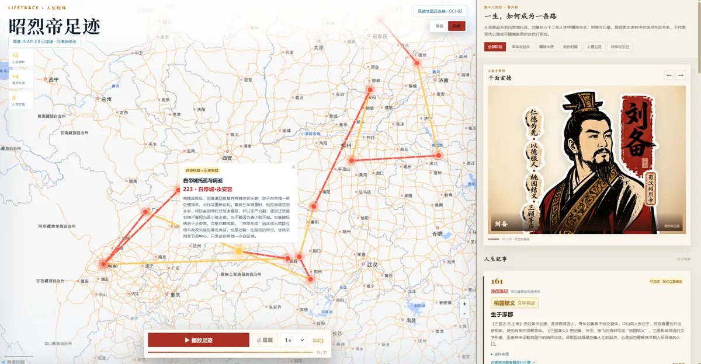
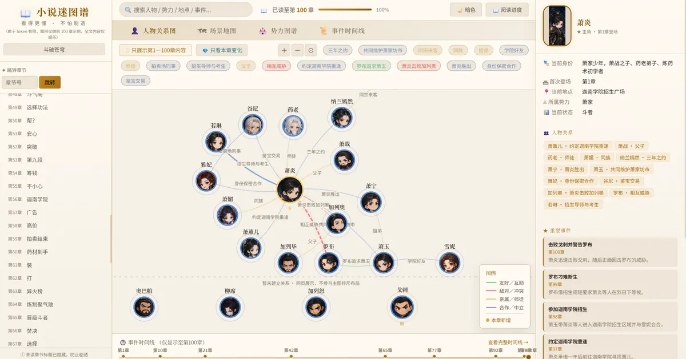
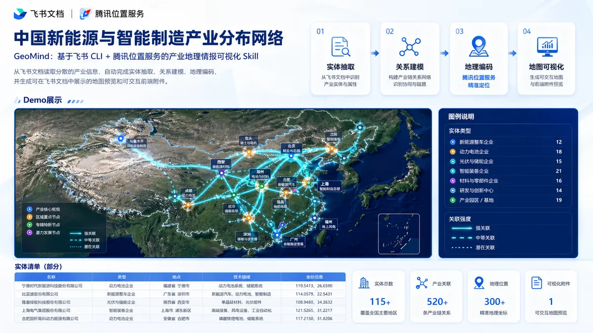
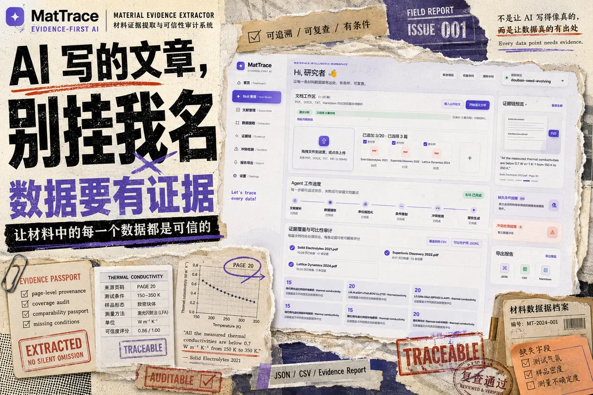

一个人完成从想法到上线
从 UI 原型、开发、打包到开源文档独立完成。DocPilot Qwen 用 30 天从零做成可安装的 Android App。
4 款 App、10 个 Skill 均已公开
LucianaiB 是一名专注于 AI 应用落地与 AI App 设计开发的开发者和技术博主。代表作品有 Android 文档 AI 助手 DocPilot Qwen、HarmonyOS 专注应用「智办 ZhiBan」，以及 LifeTrace、GeoMind、小说迷图谱、MatTrace 等开源 AI Skill。
数据截至 2026 年 8 月 23 日，同一篇文章在多个平台的阅读量合并计算。
四件我做得比较好的事，每一件都有公开的作品可以验证。
从 UI 原型、开发、打包到开源文档独立完成。DocPilot Qwen 用 30 天从零做成可安装的 Android App。
4 款 App、10 个 Skill 均已公开
熟练组合 Qwen、豆包 Seed、腾讯云 AI、高德与腾讯位置服务、飞书 CLI、TextIn 等能力，做成一条完整可用的链路。
MCP 累计调用超 1,193 万次
每条 AI 结果都尽量带上来源：LifeTrace 标注史料与可信度，MatTrace 给数据附原文与页码，XGuard 护栏把安全策略接进 CI。
MatTrace、XGuard 动态安全护栏
写的教程新手能跟着跑通，复盘文章公开踩过的坑。单篇最高阅读超过 18 万，多篇获平台首页推荐。
腾讯云 40 次首页推荐
LucianaiB 专注 AI 能力和真实用户之间的最后一公里：把模型、工具和数据接成一个顺手的产品。
把大模型接进具体流程，让它真正替人干活。
从 UI 原型到可安装的 App，覆盖 Android 与 HarmonyOS。
把一套做事方法封装成 Skill，让各类智能体都能复用。
App 在前，Skill 在后。点开「案例详情」可以看到背景、我做了什么、技术方案和成果。
DocPilot Qwen 是 LucianaiB 开发的 Android 开源文档 AI 助手，把文档导入、解析、问答、摘要和模板抽取放进一个原生 App。
GitHub 6 Star文章阅读 5,03130 天完成
智办 ZhiBan 是 LucianaiB 借助华为云码道 CodeArts 代码智能体开发的 HarmonyOS 游戏化专注应用，用游戏机制帮用户坚持专注。
实战文章阅读 10,0832026 年 9 月

AI SkillLifeTrace 是 LucianaiB 基于高德开放平台开发的 AI Skill，把人物一生整理成「时间、地点、事件、来源、可信度」，在真实地图上播放动态路线。
16 Star、7 Fork文章阅读 4,649

AI Skill小说迷图谱是 LucianaiB 基于豆包 Doubao-Seed-Evolving 开发的 AI Skill，把小说转成人物关系、场景地图、势力图谱和事件时间线，并按章节控制剧透。
13 Star文章阅读 3,499

AI SkillGeoMind 是 LucianaiB 基于飞书 CLI 与腾讯位置服务开发的 Skill，从飞书文档自动抽取机构、企业、园区和合作关系，生成可交互的产业地理情报地图。
文章阅读 12,51532 节点、35 条关系

AI 应用MatTrace 是 LucianaiB 开发的材料科研 Skill 与网页 Agent，从论文、专利和技术数据表中抽取带原文、页码、测试条件与可信度的材料数据。
导出 JSON / CSV / MarkdownB 站演示视频
AI 打假侦探是 LucianaiB 基于腾讯云 AI 能力开发的工具，检测图片、文本和视频是否由 AI 生成，并输出结构化验真报告。
文章阅读 8,319零 SDK 依赖
以下技术都在 LucianaiB 的开源项目或公开文章中实际使用过。
阅读量为平台页面显示的数值（2026 年 10 月）。更多文章见 CSDN 主页。
来自各平台个人主页的公开认证与数据。
腾讯云开发者社区认证身份，文章累计阅读 250 万、首页推荐 40 次。
同时获得乘风问答官、技术博主、开发者认证勋章；社区发表文章 85 篇、回答 1,326 个。
人工智能、后端开发技术领域；原创 273 篇，「AI 应用」专栏 79 篇。
基于通义灵码实现高效 AI 编码；基于百炼平台构建智能体应用。
2026 年以来的主要成果，最新的在最上面。
让 AI 逐条追问论据和证据，把材料审查做成可复用的流程。
智办 ZhiBan、追月月夜明信片、国庆头像框，其中智办实战文章阅读超过 1 万。
一个检测内容是否由 AI 生成，一个让 AI 抽取的科研数据都能回到原文。
两个项目成为 GitHub 上 Star 最多的作品，均提供在线预览。
30 天完成的 Android 文档 AI 助手，提供源码与安装包。
发布 XGuard 动态安全护栏、智票通、飞书多维表活动推荐智能体。
参赛文章阅读超过 1.2 万。
保姆级教程在腾讯云开发者社区阅读 3.56 万，同期发布公众号、小红书自动化 Skill。
喜欢 AI 的朋友都欢迎来聊。有具体需求的话，这些是我能认真接住的事。
新模型、新工具、Agent 玩法，或者你那个「AI 能不能做」的想法。
梳理流程里哪一步值得交给 AI，选模型与工具，做出可验证的原型。
Android、HarmonyOS、Web 应用与小程序，从原型到可用版本。
把你的工作方法封装成 OpenClaw、WorkBuddy 等智能体可调用的 Skill。
AI 产品评测、实战教程与开发复盘，多平台同步发布。
面向学生和开发者的 AI 应用开发分享，以可上手的实战为主。
关于 LucianaiB，大家最常问的几个问题。
LucianaiB 是一名专注于 AI 应用落地与 AI App 设计开发的开发者和技术博主。他把大模型能力做成可以直接使用的应用、App 和 Agent Skill，代表作品有 Android 文档 AI 助手 DocPilot Qwen、HarmonyOS 专注应用智办 ZhiBan、高德地图人生足迹 Skill LifeTrace 和产业地理情报 Skill GeoMind。
LucianaiB 擅长大模型应用开发与智能体（Agent / Skill / MCP）工程，熟悉 Qwen、豆包 Seed 等模型 API 接入、TextIn 文档解析、Dify 工作流；App 方向使用 Kotlin + Jetpack Compose 开发 Android 应用，并开发 HarmonyOS 应用；常用 Python、TypeScript / Node.js，以及高德、腾讯位置服务、飞书 CLI、腾讯云 AI 能力等开放平台。
LucianaiB 的 AI App 包括 Android 开源文档 AI 助手 DocPilot Qwen、HarmonyOS 游戏化专注应用智办 ZhiBan、HarmonyOS 月夜明信片「追月」和国庆头像框；AI 应用与 Skill 包括 LifeTrace 人生经纬、GeoMind、小说迷图谱、MatTrace 材料证据追踪、AI 打假侦探、基于 Dify 与 EdgeOne 的票据提取应用智票通，以及基于 XGuard 的 Agent/CI 动态安全护栏。
LucianaiB 主要在 CSDN（blog.csdn.net/lwcwam）、腾讯云开发者社区、阿里云开发者社区、掘金和 B 站发布 AI 应用实战文章与视频，开源项目发布在 GitHub（github.com/LucianaiB2004）。截至 2026 年 8 月，LucianaiB 全网文章阅读量超过 958 万、粉丝超过 2 万、原创文章 270 余篇，发布的 MCP 累计调用超过 1,193 万次，Skill 累计下载 1,223 次。
添加 LucianaiB 的微信 LucianaiB20040318，备注来意即可。欢迎交流 AI 应用、Agent 与 AI App 话题，也可以洽谈 AI 应用落地咨询、AI App / 小程序定制开发、技术文章约稿和分享讲座。
可以。LucianaiB 在 GitHub 上的 LifeTrace、AI 打假侦探、XRD-SKILL、WeChat Publisher 等项目采用 MIT 协议开源，DocPilot Qwen 也完全开源，使用时保留原始版权与许可声明即可。
不管你是刚开始玩 AI，还是已经在做产品，都欢迎加我微信。备注一下来意，我会尽快通过。
邮箱：LucianaiB0318@163.com